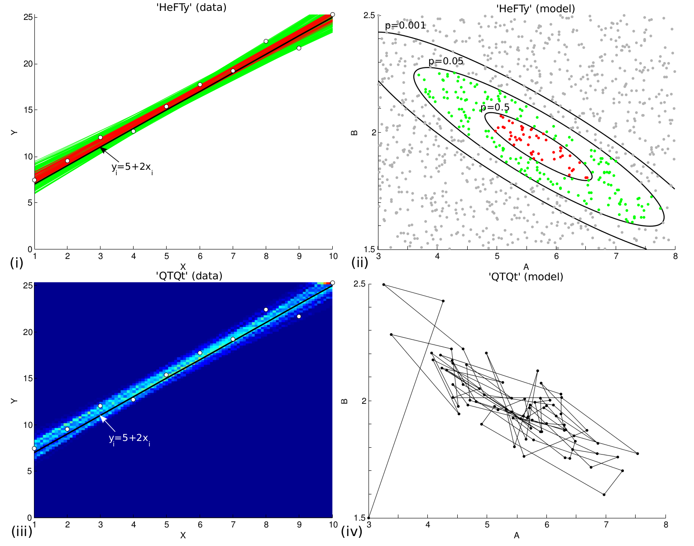
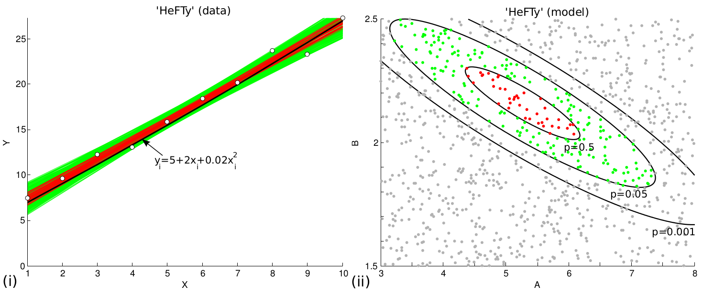
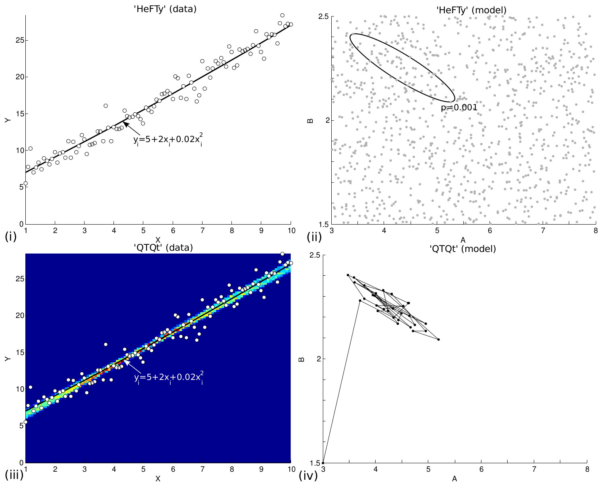
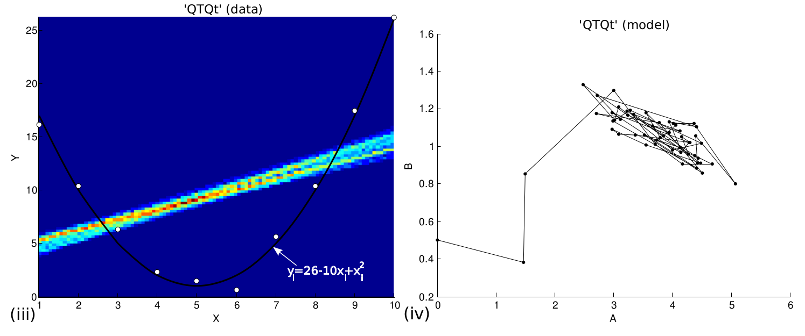
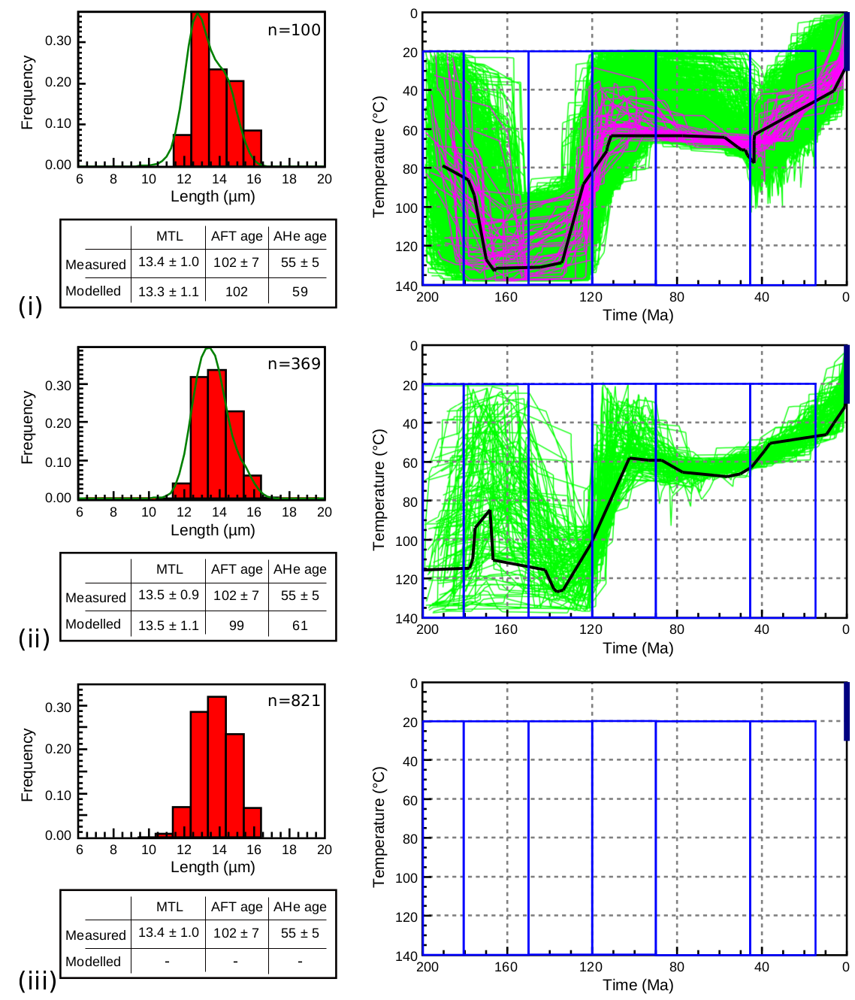
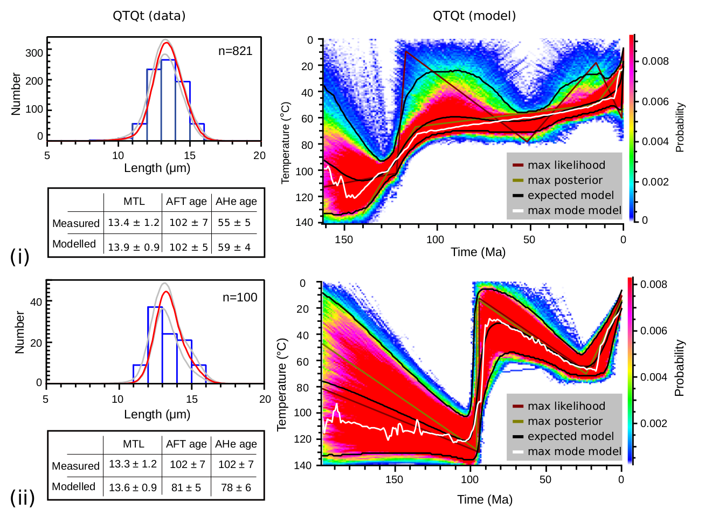

Thermal history modelling: HeFTy vs. QTQt
Abstract HeFTy is a popular thermal history modelling program which is named after a brand of trash bags as a reminder of the ‘garbage in, garbage out’ principle. QTQt is an alternative program whose name refers to its ability to extract visually appealing (‘cute’) time-temperature paths from complex thermochronological datasets. This paper compares and contrasts the two programs and aims to explain the algorithmic underpinnings of these ‘black boxes’ with some simple examples. Both codes consist of ‘forward’ and ‘inverse’ modelling functionalities. The ‘forward model’ allows the user to predict the expected data distribution for any given thermal history. The ‘inverse model’ finds the thermal history that best matches some input data. HeFTy and QTQt are based on the same physical principles and their forward modelling functionalities are therefore nearly identical. In contrast, their inverse modelling algorithms are fundamentally different, with important consequences. HeFTy uses a ‘Frequentist’ approach, in which formalised statistical hypothesis tests assess the goodness-of-fit between the input data and the thermal model predictions. QTQt uses a Bayesian ‘Markov Chain Monte Carlo’ (MCMC) algorithm, in which a random walk through model space results in an assemblage of ‘most likely’ thermal histories. In principle, the main advantage of the Frequentist approach is that it contains a built-in quality control mechanism which detects bad data (‘garbage’) and protects the novice user against applying inappropriate models. In practice, however, this quality-control mechanism does not work for small or imprecise datasets due to an undesirable sensitivity of the Frequentist algorithm to sample size, which causes HeFTy to ‘break’ when datasets are sufficiently large or precise. QTQt does not suffer from this problem, as its performance improves with increasing sample size in the form of tighter credibility intervals. However, the robustness of the MCMC approach also carries a risk, as QTQt will accept physically impossible datasets and come up with ‘best fitting’ thermal histories for them. This can be dangerous in the hands of novice users. In conclusion, the name ‘HeFTy’ would have been more appropriate for QTQt, and vice versa. keywords: thermochronology; modelling; statistics; software; fission tracks; (U-Th)/He 1 IntroductionThermal history modelling is an integral part of dozens of tectonic studies published each year [e.g., (1; 2; 3)]. Over the years, a number of increasingly sophisticated software packages have been developed to extract time-temperature paths from fission track, U-Th-He, 4He/3He and vitrinite reflectance data [e.g., (4; 5; 6; 7)]. The current ‘market leaders’ in inverse modelling are HeFTy (8) and QTQt (9). Like most well written software, HeFTy and QTQt hide all their implementation details behind a user friendly graphical interface. This paper has two goals. First, it provides a ‘glimpse under the bonnet’ of these two ‘black boxes’ and second, it presents an objective and independent comparison of both programs. We show that the differences between HeFTy and QTQt are significant and explain why it is important for the user to be aware of them. To make the text accessible to a wide readership, the main body of this paper uses little or no algebra (further theoretical background is deferred to the appendices). Instead, we illustrate the strengths and weaknesses of both programs by example. The first half of the paper applies the two inverse modelling approaches to a simple problem of linear regression. Section 2 shows that both algorithms give identical results for well behaved datasets of moderate size (Section 2.1). However, increasing the sample size makes the ‘Frequentist’ approach used by HeFTy increasingly sensitive to even small deviations from linearity (Section 2.2). In contrast, the ‘MCMC’ method used by QTQt is insensitive to violations of the model assumptions, so that even a strongly non-linear dataset will produce a ‘best fitting’ straight line (Section 2.3). The second part of the paper demonstrates that the same two observations also apply to multivariate thermal history inversions. Section 3 uses real thermochonological data to illustrate how one can easily ‘break’ HeFTy by simply feeding it with too much high quality data (Section 3.1), and how QTQt manages to come up with a tightly constrained thermal history for physically impossible datasets (Section 3.2). Thus, HeFTy and QTQt are perfectly complementary to each other in terms of their perceived strengths and weaknesses.
2 Part I: linear regressionBefore venturing into the complex multivariate world of thermochronology, we will first discuss the issues of inverse modelling in the simpler context of linear regression. The bivariate data in this problem [{x,y} where x={x1,...,xi,...,xn} and y={y1,...,yi,...,yn}] will be generated using a polynomial function of the form:
where a, b and c are constants and ϵi are the ‘residuals’, which are drawn at random from a Normal distribution with zero mean and standard deviation σ. We will try to fit these data using a two-parameter linear model:
On an abstract level, HeFTy and QTQt are two-way maps between the ‘data space’ {x,y} and ‘model space’ {A,B}. Both programs comprise a ‘forward model’, which predicts the expected data distribution for any given set or parameter values, and an ‘inverse model’, which achieves the opposite end (Figure 1). Both HeFTy and QTQt use a probabilistic approach to finding the set of models {A,B} that best fit the data {x,y}, but they do so in very different ways, as discussed next.
Figure 1: HeFTy and QTQt are ‘two-way maps’ between the ‘data space’ on the left and the ‘model space’ on
the right. Inverse modelling is a two-step process. It involves (a) generating some random models from which
synthetic data can be predicted and (b) comparing these ‘forward models’ with the actual measurements.
HeFTy and QTQt fundamentally differ in both steps (Section 2.1).
2.1 Linear regression of linear dataFor the first case study, consider a synthetic dataset of n=10 data points drawn from Equation 1 with a=5, b=2,
c=0 and σ=1 (Figure 2(i)). It is easy to fit a straight line model through these data and determine parameters
A and B of Equation 2 analytically by ordinary least squares regression. However, for the sake of
illustrating the algorithms used by HeFTy and QTQt, it is useful to do the same exercise by numerical
modelling. In the following, the words ‘HeFTy’ and ‘QTQt’ will be placed in inverted commas when
reference is made to the underlying methods, rather than the actual computer programs by (8) and
(9). ‘HeFTy’ explores the ‘model space’ by generating a large number (N) of independent random intercepts and slopes (Aj,Bj for j=1→N), drawn from a joint uniform distribution (Figure 2(ii)). Each of these pairs corresponds to a straight line model, resulting in a set of residuals (yi - Aj - Bj xi) which can be combined into a least-squares goodness-of-fit statistic:
Low and high χstat2-values correspond to good and bad data fits, respectively. Under the ‘Frequentist’ paradigm of statistics (see Appendix A), χstat2 can be used to formally test the hypothesis (‘H0’) that the data were drawn from a straight line model with a=Aj, b=Bj and c=0. Under this hypothesis, χstat2 is predicted to follow a ‘Chi-square distribution with n-2 degrees of freedom’1:
Where ‘P(X|Y)’ stands for “the probability of X given Y”. The ‘likelihood function’ P(x,y|Aj,Bj) allows us to
test how ‘likely’ the data are under the proposed model. The probability of observing a value at least as extreme as
χstat2 under the proposed (Chi-square) distribution is called the ‘p-value’. HeFTy uses cutoff-values of 0.05 and 0.5
to indicate ‘acceptable’ and ‘good’ model fits. Out of N=1000 models tested in Figure 2(i-ii), 50 fall in the first, and
180 in the second category.

Figure 2: (i) – white circles show 10 data points drawn from a linear model (black line) with Normal
residuals (σ=1). Red and green lines show the linear trends that best fit the data according to the Chi-square
test; (ii) – the ‘Frequentist’ Monte Carlo algorithm (‘HeFTy’) makes 1000 independent random guesses for
the intercept (A) and slope (B) drawn from a joint uniform distribution. A Chi-square goodness-of-fit test
is done for each of these guesses. p-values >0.05 and and >0.5 are marked as green (‘acceptable’) and red
(‘good’), respectively. (iii) – white circles and black line are the same as in (i). The colour of the pixels
(ranging from blue to red) is proportional to the number of ‘acceptable’ linear fits passing through them using
the ‘Bayesian’ algorithm (‘QTQt’). (iv) – ‘QTQt’makes a random walk (‘Markov Chain’) through parameter
space, sampling the ‘posterior distribution’ and yielding an ‘assemblage’ of best fitting slopes and intercepts
(black dots and lines).
QTQt also explores the ‘model space’ by random sampling, but it goes about this in a very different way than HeFTy. Instead of ‘carpet bombing’ the parameter space with uniformly distributed independent values, QTQt performs a random walk of serially dependent random values. Starting from a random guess anywhere in the parameter space, this ‘Markov Chain’ of random models systematically samples the model space so that models with high P(x,y|Aj,Bj) are more likely to be accepted than those with low values. Thus, QTQt bases the decision whether or not to accept or reject the jth model not on the absolute value of P(x,y|Aj,Bj), but on the ratio of P(x,y|Aj,Bj) / P(x,y|Aj-1,Bj-1). See Appendix B for further details about Markov Chain Monte Carlo (MCMC) modelling. The important thing to note at this point is that in well behaved systems like our linear dataset, QTQt’s MCMC approach yields identical results to HeFTy’s Frequentist algorithm (Figure 2(ii)-(iv)). 2.2 Linear regression of weakly non-linear dataThe physical models which geologists use to describe the diffusion of helium or the annealing of fission tracks are but
approximations of reality. To simulate this fact in our linear regression example, we will now try to fit
a linear model to a weakly non-linear dataset generated using Equation 1 with a=5, b=2, c=0.02
and σ=1. First, we consider a small sample of n=10 samples from this distribution (Figure 3(i)). The
quadratic term (i.e., c) is so small that the naked eye cannot spot the non-linearity of these data, and
neither can ‘HeFTy’. Using the same number of N=1000 random guesses as before, ‘HeFTy’ finds 41
acceptable and 186 good fits using the χ2-test (Figure 3(ii)). In other words, with a sample size of
n=10, the non-linearity of the input data is ‘statistically insignificant’ relative to the data scatter
σ.

Figure 3: (i) – as Figure 2(i) but using slightly non-linear input. (ii) – as Figure 2(ii): with a sample size of
just 10 and relatively noisy data (σ=1) ‘HeFTy’ has no trouble finding best fitting linear models, and neither
does ‘QTQt’ (not shown).
The situation is very different when we increase the sample size to n=100 (Figure 4(i)-(ii)). In this case, ‘HeFTy’ fails to find even a single linear model yielding a p-value greater than 0.05. The reason for this is that the ‘power’ of statistical tests such as Chi-square increases with sample size (see Appendix C for further details). Even the smallest deviation from linearity becomes ‘statistically significant’ if a sufficiently large dataset is available. This is important for thermochronology, as will be illustrated in Section 3.1. Similarly, the statistical significance also increases with analytical precision. Reducing σ from 1 to 0.2 has the same effect as increasing the sample size, as ‘HeFTy’ again fails to find any ‘good’ solutions (Figure 5(i)-(ii)). ‘QTQt’, on the other hand, handles the large (Figure 4(iii)-(iv)) and precise (Figure 5(iii)-(iv)) datasets much better. In fact, increasing the quantity (sample size) or quality (precision) of the data only has beneficial effects as it tightens the solution space (Figure 4(iv) vs. 5(iv)).

Figure 4: (i)-(ii) as Figure 3(i)-(ii) but with a sample size of 100: ‘HeFTy’ does not manage to find even a
single ‘acceptable’ linear fit to the data. (iii)-(iv) – the same data analysed by ‘QTQt’, which has no problems
in finding a tight fit.
2.3 Linear regression of strongly non-linear dataFor the third and final case study of our linear regression exercise, consider a pathological dataset produced by setting a=26, b=-10, c=1 and σ=1. The resulting data points fall on a parabolic line, which is far removed from the 2-parameter linear model of Equation 2. Needless to say, the ‘HeFTy’ algorithm does not find any ‘acceptable’ models. Nevertheless, the QTQt-like MCMC algorithm has no trouble fitting a straight line through these data. Although the resulting likelihoods are orders of magnitude below those of Figure 2, their actual values are not used to assess the goodness-of-fit, because the algorithm only evaluates the relative ratios of the likelihood for adjacent models in the Markov Chain (Appendix B). It is up to the subjective judgement of the user to decide whether to accept or reject the proposed inverse models. This is very easy to do in the simple regression example of this section, but may be significantly more complcated for high-dimensional problems such as the thermal history modelling discussed in the next section. In conclusion, the simple linear regression toy example has taught us that (a) the ability of a Frequentist algorithm such as HeFTy to find a suitable inverse model critically depends on the quality and quantity of the input data; while (b) the opposite is true for a Bayesian algorithm like QTQt, which always finds a suite of suitable models, regardless how large or bad a dataset is fed into it. The next section of this paper will show that the same principles apply in exactly the same way to thermochronology.

Figure 6: (i) – white circles show 10 data points drawn from a strongly non-linear model (black line). (ii)
– although it clearly does not make any sense to fit a straight line through these data, ‘QTQt’ nevertheless
manages to do exactly that. ‘HeFTy’ (not shown), of course, does not.
3 Part II: thermal history modellingThe previous section revealed significant differences between ‘HeFTy-like’ and ‘QTQt-like’ inverse modelling approaches to a simple two-dimensional problem of linear regression. Both algorithms were shown to yield identical results in the presence of small and well-behaved datasets. However, their response differed in response to large or poorly behaved datasets. We will now show that exactly the same phenomenon manifests itself in the multi-dimensional context of thermal history modelling. First, we will use a geologically straightforward thermochronological dataset to ‘break’ HeFTy (Section 3.1). Then, we will use a physically impossible dataset to demonstrate that it is impossible to break QTQt even when we want to (Section 3.2).
3.1 Large datasets ‘break’ HeFTyWe will investigate HeFTy with a large but otherwise unremarkable sample and using generic software settings like
those used by the majority of published HeFTy applications. The sample (‘KL29’) was collected from a Mesozoic
granite located in the central Tibetan Plateau (GPS: 33.87N, 95.33E). It is characterised by a 102 ±
7 Ma AFT age and a mean (unprojected) track length of ~12.1 μm, which was calculated from a
dataset of 821 horizontally confined fission tracks. It is the large size of our dataset that allows us to
push HeFTy to its limits. In addition to the AFT data, we also measured five apatite U-Th-He (AHe)
ages, ranging from 47-66 Ma. AFT and AHe analyses were done at the University of Melbourne and
University College London using procedures outlined by (1) and (10), respectively. For the thermal history
modelling, we used the multi-kinetic annealing model of (11), employing Dpar as a kinetic parameter.
Helium diffusion in apatite was modelled with the Radiation Damage Accumulation and Annealing
Model (RDAAM) of (12). Goodness-of-fit requirements for ‘good’ and ‘acceptable’ thermal paths were
defined as 0.5 and 0.05 (see Section 2.1) and the present-day mean surface temperature was set to 15 ±
15∘C. To speed up the inverse modelling, it was necessary to specify a number of ‘bounding boxes’ in
time-temperature (t-T) space. The first of these t-T constraints was set at 140∘C/200Ma – 20∘C/180Ma, i.e.
slightly before the oldest AFT age. Five more equally broad boxes were used to guide the thermal
history modelling (Figure 7). The issue of ‘bounding boxes’ will be discussed in more detail in Section
5. In a first experiment, we modelled a small subset of our data comprising just the first 100 track length
measurements. After one million iterations, HeFTy returned 39 ‘good’ and 1,373 ‘acceptable’ thermal histories,
featuring a poorly resolved phase prior to 120 Ma, followed by rapid cooling to ~60∘C, a protracted isothermal
residence in the upper part of the AFT partial annealing zone from 120-40 Ma, and ending with a phase of more
rapid cooling from 60 to 15∘C since 40 Ma. This is in every way an unremarkable thermal history, which correctly
reproduces the negatively skewed (c-axis projected) track length distribution, and predicts AFT and AHe ages of
102 and 59 Ma, respectively, well within the range of the input data (Figure 7(i)). Next, we move on to a
larger dataset, which was generated using the same AFT and AHe ages as before, but measuring an
extra 269 confined fission tracks in the same slide as the previously measured 100 tracks. Despite the
addition of so many extra measurements, the resulting length distribution looks very similar to the
smaller dataset. Nevertheless, HeFTy struggles to find suitable thermal histories. In fact, the program
fails to find a single ‘good’ t-T path even after a million iterations, and only comes up with a measly
109 ‘acceptable’ solutions. A closer look at the model predictions reveals that HeFTy does a decent
job at modelling the track length distribution, but that this comes at the expense of the AFT and
AHe age predictions, which are further removed from the measured values than in the small dataset
(Figure 7(ii)). In a final experiment, we prepared a second fission track slide for sample KL29, yielding a
further 452 fission track length measurements. This brings the total tally of the length distribution
to an unprecedented 821 measurements, allowing us to push HeFTy to its breaking point. After one
million iterations, HeFTy does not manage to find even a single ‘acceptable’ t-T path (Figure 7(iii)).
It is troubling that HeFTy performs worse for large datasets than it does for small ones. It seems unfair that the user should be penalised for the addition of extra data. The reasons for this behaviour will be discussed in Section 4. But first, we shall have a closer look at QTQt, which has no problem fitting the large dataset (Figure 8(i)) but poses some completely different challenges.

Figure 7: Data (left column) and inverse model solutions (right column) produced by HeFTy [v1.8.2, (8)] for
sample KL29. (c-axis projected) track length distributions are shown as histograms. Bounding boxes (blue)
were used to reduce the model space and speed up the inverse modelling (Section 5). (i) – red and green
time temperature (t-T) paths mark ‘good’ and ‘acceptable’ fits to the data, corresponding to p-values of 0.5
and 0.05, respectively. (ii) – as the number of track length measurements (n) increases, p-values decrease
(for reasons given in Appendix C) and HeFTy struggles to find acceptable solutions. (iii) – eventually, when
n=821, the program ‘breaks’.
3.2 ‘garbage in, garbage out’ with QTQtContrary to HeFTy, QTQt does not mind large datasets. In fact, its inverse modelling results improve with the
addition of more data. This is because large datasets allow the ‘reversible jump MCMC’ algorithm (Appendix B) to
add more anchor points to the candidate models, thereby improving the resolution of the t-T history. Thus, QTQt
does not punish but reward the user for adding data. For the full 821-length dataset of KL29, this results in a
thermal history similar to the HeFTy model of Figure 7(i). We therefore conclude that QTQt is much more robust
than HeFTy in handling large and possible complex datasets. However, this greater robustness also carries a danger
with it, as will be shown next. We now apply QTQt to a semi-synthetic dataset generated by arbitrarily
changing the AHe age of sample KL29 from 55 ± 5 Ma to 102 ± 7 Ma, i.e. identical to its AFT age. As
discussed in Section 3.1, the sample has a short (~12.1 μm) mean (unprojected) fission track length,
indicating slow cooling through the AFT partial annealing zone. The identical AFT and AHe ages,
however, imply infinitely rapid cooling. The combination of the AFT and AHe data is therefore physically
impossible and, not surprisingly, HeFTy fails to find a single ‘acceptable’ fit even for a moderate sized
dataset of 100 track lengths. QTQt, however, has no problem finding a ‘most likely’ solution (Figure
8(ii)). The resulting assemblage of models is characterised by a long period of isothermal holding at the base of the AFT partial annealing zone (~120 ∘C), followed by rapid cooling at 100Ma, gentle heating to the AHe partial retention zone (~60 ∘C) until 20 Ma and rapid cooling to the surface thereafter (Figure 8(ii)). This assemblage of thermal history models is largely unremarkable and does not, in itself, indicate any problems with the input data. These problems only become clear when we compare the measured with the modelled data. While the fit to the track length measurements is good, the AFT and AHe ages are off by 20%. It is then up to the user to decide whether or not this is ‘significant’ enough to reject the model results. This is not necessarily as straightforward as it may seem. For instance, the original QTQt paper by [Figure 7, (9)] presents a dataset in which the measured and modelled values for the kinetic parameter DPar differ by 25%. In this case, the author has made a subjective decision to attach less credibility to the DPar measurement. This may very well be (and probably is) justified, but nevertheless requires expert knowledge of thermochronology while remaining, once again, subjective. This subjectivity is the price of Bayesian MCMC modelling.

Figure 8: Data (left) and models (right) produced by QTQt [v4.5, (9)], after a ‘burn-in’ period of 500,000
iterations, followed by another 500,000 ‘post-burn-in’ iterations. No time or temperature constraints were
given apart from a broad search limit of 102 ± 102 Ma and 70 ± 70 ∘C. (i) – QTQt has no trouble fitting the
large dataset that broke HeFTy in Figure 7. (ii) – neither does QTQt complain when a physically impossible
dataset with short fission tracks and identical AFT and AHe ages is fed into it. Note that the ‘measured’
mean track lengths reported in this table are slightly different from those of Figure 7, despite being based
on exactly the same data. This is because QTQt calculates the c-axis projected values using an average Dpar
for all lengths, whereas HeFTy uses the relevant Dpar for each length.
4 DiscussionThe behaviour shown by HeFTy and QTQt in a thermochronological context (Section 3) is identical to the toy
example of linear regression (Section 2). HeFTy is ‘too picky’ when it comes to large datasets and QTQt is ‘not picky
enough’ when it comes to bad datasets. These opposite types of behaviour are a direct consequence of the statistical
underpinnings of the two programs. The sample size dependence of HeFTy is caused by the fact that it
judges the merits of the trial models by means of formalised statistical hypothesis tests, notably the
Kolmogorov-Smirnov (K-S) and χ2-tests. These tests are designed to make a black or white decision as to whether
the hypothesis is right or wrong. However, as stated in Section 2.2, the physical models produced by Science
(including Geology) are “but approximations of reality” and are therefore always ‘somewhat wrong’.
This should be self-evident from a brief look at the Settings menu of HeFTy, which offers the user
the choice between, for example, the kinetic annealing model of (13) or (11). Surely it is logically
impossible for both models to be correct. Yet for sufficiently small samples, HeFTy will find plenty of
‘good’ t-T paths in both cases. The truth of the matter is that both the (13) and the (11) models are
incorrect, albeit to different degrees. As sample size increases, the ‘power’ of statistical tests such as K-S
and χ2 to detect the ‘wrongness’ of the annealing models increases as well (Appendix C). Thus, as
we keep adding fission track length measurements to our dataset, HeFTy will find it more and more
difficult to find ‘acceptable’ t-T paths. Suppose, for the sake of the argument, that the (13) annealing
model is ‘more wrong’ than the (11) model. This will manifest itself in the fact that beyond a critical
sample size, HeFTy will fail to find even a single ‘acceptable’ model using the (13) model, while the (11)
model will still yield a small number of ‘non-disprovable’ t-T paths. However, if we further increase the
sample size beyond this point, then even the (11) model will eventually fail to yield any ‘acceptable’
solutions. The problem is that Geology itself imposes unrealistic assumptions on our thermal modelling efforts. Our
understanding of diffusion and annealing kinetics is based on short term experiments carried out in completely
different environments than the geological processes which we aim to understand. For example, helium diffusion
experiments are done under ultra-high vacuum at temperatures of hundreds of degrees over a duration of at most a
few weeks. These are very different conditions than those found in the natural environment, where diffusion takes
place under hydrostatic pressure at a few tens of degrees over millions of years (14). But even if we
disregard this problem, and imagine a utopian scenario in which our annealing and diffusion models are an
exact description of reality, the p-value conundrum would persist, because there are dozens of other
experimental factors that can go wrong, resulting in dozens of reasons for K-S and χ2 to reject the data.
Examples are observer bias in AFT analysis (15) or inaccurate α-ejection correction due to undetected
U-Th-zonation in AHe dating (16). Given a large enough data set, K-S and χ2 will be able to ‘see’ these
effects. One apparent solution to this problem is to adjust the p-value cutoffs for ‘good’ and ‘acceptable’ models from
their default values of 0.5 and 0.05 to another value, in order to account for differences in sample size. Thus, large
datasets would require lower p-values than small ones. The aim of such a procedure would be to objectively accept
or reject models based on a sample-independent ‘effect size’ (see Appendix C). Although this sounds easy enough in
theory, the implementation details are not straightforward. The problem is that HeFTy is very flexible in
accepting many different types of data and it is unclear how these can be normalised in a common
reference frame. For example, one data set might include only AFT data, a second AFT as well as AHe
data, while a third might throw some vitrinite reflectance data into the mix as well. Each of these
different types of data is evaluated by a different statistical test, and it is unclear how to consistently
account for sample size in this situation. On a related note, it is important to discuss the current way in
which HeFTy combines the p-values for each of the previously mentioned hypothesis tests. Sample
KL29 of Section 3, for example, yields three different p-values: one for the fission track lengths, one
for the AFT ages and one for the AHe ages. HeFTy bases the decision whether to reject or accept a
t-T path based on the lowest of these three values (8). This causes a second level of problems, as the
chance of erroneously rejecting a correct null hypothesis (a so-called ‘Type-I error’) increases with
the number of simultaneous hypothesis tests. In this case we recommend that the user adjust the
p-value cutoff by dividing it by the number of datasets (i.e., use a cutoff of 0.5/3 = 0.17 for ‘good’
and 0.05/3 = 0.017 for ‘acceptable’ models). This is called the ‘Bonferroni correction’ [e.g., p.424 of
(17)]. In summary, the very idea to use statistical hypothesis tests to evaluate the model space is problematic.
Unfortunately, we cannot use p-values to make a reliable decision to find out whether a model is ‘good’ or
‘acceptable’, independent of sample size. QTQt avoids this problem by ranking the models from ‘bad’ to ‘worse’, and
then selecting the ‘most likely’ ones according to the posterior probability (Appendix A). Because the MCMC
algorithm employed by QTQt only determines the posterior probability up to a multiplicative constant, it does not
care ‘how bad’ the fit to the data is. The advantage of this approach is that it always produces approximately the
same number of solutions, regardless of sample size. The disadvantage is that the ability to automatically detect and
reject faulty datasets is lost. This may not be a problem, one might think, if sufficient care is taken to ensure
that the analytical data are sound and correct. However, that does not exclude the possibility that
there are flaws in the forward modelling routines. For example, recall the two fission track annealing
models previously mentioned in Section 4. Although the (11) model may be a better representation of
reality than the (13) model and, therefore, yield more ‘good’ fits in HeFTy, the difference would be
invisible to QTQt users. The program will always yield an assemblage of t-T models, regardless of the
annealing model used. As a second example, consider the poor age reproducibility that characterises
many U-Th-He datasets and which has long puzzled geochronologists (18). A number of explanations
have been proposed to explain this dispersion over the years, ranging from invisible and insoluble
actinide-rich mineral inclusions (19), α-implantation by ‘bad neighbours’ (20), fragmentation during mineral
separation (21) and radiation damage due to α-recoil (12). The latter two hypotheses are linked to precise
forward models which can easily be incorporated into inverse modelling software such as HeFTy and
QTQt. Some have argued that dispersed data are to be preferred over non-dispersed measurements
because they offer more leverage for t-T modelling (22). However, all this assumes that the physical
models are correct, which, given the fact that there are so many competing ‘schools of thought’, is
unlikely to be true in all situations. Nevertheless, QTQt will take whatever assumption specified by
the user and run with it. It is important to note that HeFTy is not immune to these problems either.
Because sophisticated physical models such as RDAAM comprise many additional parameters and,
hence, ‘degrees of freedom’, the statistical tests used by HeFTy are easily underpowered (Appendix
C), yielding many ‘good’ solutions and producing a false sense of confidence in the inverse modelling
results. In conclusion, the evaluation of whether an inverse model is physically sound is more subjective in QTQt than it is in HeFTy. There is no easy way to detect analytical errors or invalid model assumptions other than by subjectively comparing the predicted data with the input measurements. Note that it is possible to ‘fix’ this limitation of QTQt by explicitly evaluating the multiplicative constant given by the denominator in Bayes’ Theorem (Appendix A). We could then set a cutoff value for the posterior probability to define ‘good’ and ‘acceptable’ models, just like in HeFTy. However, this would cause exactly the same problems of sample size dependency as we saw earlier. Conversely, HeFTy could be modified in the spirit of QTQt, by using the p-values to rank models from ‘bad’ to ‘worst’, and then simply plotting the ‘most likely’ ones. Unfortunately, the problem with this approach is the sensitivity of HeFTy to the dimensionality of the model space. In order to be able to objectively compare two samples using the proposed ranking algorithm, the parameter space should be devoid of ‘bounding boxes’, and be fixed to a constant search range in time and temperature. This would make HeFTy unreasonably slow, for reasons explained in Section 5.
5 On the selection of time-temperature constraintsAs we saw in Section 3.1, HeFTy allows, and generally even requires, the user to constrain the search space
by means of ‘bounding boxes’. Often these boxes are chosen to correspond to geological constraints,
such as known phases of surface exposure inferred from independently dated unconformities. But even
when no formal geological constraints are available, the program often still requires bounding boxes to
speed up the modelling. This is a manifestation of the so-called ‘curse of dimensionality’, which is a
problem caused by the exponential increase in ‘volume’ associated with adding extra dimensions to a
mathematical space. Consider, for example, a unit interval. The average nearest neighbour distance
between 10 random samples from this interval will be 0.1. To achieve the same sampling density for a
unit square requires not 10 but 100 samples, and for a unit cube 1000 samples. The parameter space
explored by HeFTy comprises not two or three but commonly dozens of parameters (i.e., anchor points in
time-temperature space), requiring tens of thousands of uniformly distributed random sets to be explored in
order to find the tiny subset of statistically plausible models. Furthermore, the ‘sampling density’ of
HeFTy’s randomly selected t-T paths also depends on the allowed range of time and temperature. For
example, keeping the temperature range equal, it takes twice as long to sample a t-T space spanning 200
Myr than one spanning 100 Myr. Thus, old samples tend to take much longer to model than young
ones. The only way for HeFTy to get around this problem is by shrinking the search space. One way to
do this is to only permit monotonically rising t-T paths. Another is to use ‘bounding boxes’, like in
Section 3.1 and Figure 7. It is important not to make these boxes too small, especially when they
are derived from geological constraints. Otherwise the set of ‘acceptable’ inverse models may simply
connect one box to the next, mimicking the geological constraints without adding any new geological
insight. The curse of dimensionality affects QTQt in a different way than HeFTy. As explained in Section 2, QTQt does not
explore the multi-dimensional parameter space by means of independent random uniform guesses, but by performing
a random walk which explores just a small subset of that space. Thus, an increase in dimensionality does not
significantly slow down QTQt. However, this does not mean that QTQt is insensitive to the dimensionality of the
search space. The ‘reversible jump MCMC’ algorithm allows the number of parameters to vary from
one trial model to the next (Appendix B). To prevent spurious overfitting of the data, this number
of parameters is usually quite low. Whereas HeFTy commonly uses ten or more anchor points (i.e.
>20 parameters) to define a t-T path, QTQt uses far fewer than that. For example, the maximum
likelihood models in Figure 8 use just three and six t-T anchor points for the datasets comprising 100
and 821 track lengths, respectively. The crudeness of these models is masked by averaging, either
through the graphical trick of colour-coding the number of intersecting t-T paths, or by integrating the
model assemblages into ‘maximum mode’ and ‘expected’ models (23; 9). It is not entirely clear how
these averaged models relate to physical reality, but a thorough discussion of this subject falls outside
the scope of this paper. Instead, we would like to redirect our attention to the subject of ‘bounding
boxes’. Although QTQt does allow the incorporation of geological constraints, we would urge the user to refrain from using this facility for the following reason. As we saw in Sections 2.2 and 3.2, QTQt always finds a ‘most likely’ thermal history, even when the data are physically impossible. Thus, in contrast with HeFTy, QTQt cannot be used to disprove the geological constraints. We would argue that this, in itself, is reason enough not to use ‘bounding boxes’ in QTQt. Incidentally, we would also like to make the point that, to our knowledge, no thermal history model has ever been shown to independently reproduce known geological constraints such as a well dated unconformity followed by burial. Such empirical validation is badly needed to justify the degree of faith many users seem to have in interpreting subtle details of thermal history models. This point becomes ever more important as thermochronology is increasingly being used outside the academic community, and is affecting business decisions in, for example, the hydrocarbon industry.
6 ConclusionsThere are three differences between the methodology used by HeFTy and QTQt:
Of these three differences, the first one (‘Frequentist’ vs. ‘Bayesian’) is actually the least important. In fact, one
could easily envisage a Bayesian algorithm which behaves identical to HeFTy, by explicitly evaluating the posterior
probability, as discussed in Section 4. Conversely, in the regression example of Section 2, the posterior probability is
proportional to the likelihood, so that one would be justified in calling the resulting MCMC model ‘Frequentist’.
The second and third difference between HeFTy and QTQt are much more important. Even though HeFTy and QTQt
produce similar looking assemblages of t-T paths, the statistical meaning of these assemblages is fundamentally
different. The output of HeFTy comprises “all those t-T paths which cannot be rejected with the available evidence”.
In contrast, the assemblages of t-T paths generated by QTQt contain “the most likely t-T paths, assuming
that the data are good and the model assumptions are appropriate”. The difference between these two
definitions goes much deeper than mere semantics. It reveals a fundamental difference in the way the
model results of both programs ought to be interpreted. In the case of HeFTy, a ‘successful’ inversion
yielding many ‘good’ and ‘acceptable’ t-T paths may simply indicate that there is insufficient evidence to
extract meaningful thermal history information from the data. As for QTQt, its t-T reconstructions
are effectively meaningless unless they are plotted alongside the input data and model predictions.
HeFTy is named after a well known brand of waste disposal bags, as a welcome reminder of the ‘garbage in,
garbage out’ principle. QTQt, on the other hand derives its name from the ability of thermal history modelling
software to extract colourful and easily interpretable time-temperature histories from complex analytical
datasets2. In
light of the observations made in this paper, it appears that the two programs have been ‘exchanged at birth’, and
that their names should have been swapped. First, HeFTy is an arguably easier to use and visually more appealing
(‘cute’) piece of software than QTQt. Second, and more importantly, QTQt is more prone to the ‘garbage in, garbage
out’ problem than HeFTy. By using p-values, HeFTy contains a built-in quality control mechanism which can protect
the user from the worst kinds of ‘garbage’ data. For example, the physically impossible dataset of Section 3.2
was ‘blocked’ by this safety mechanism and yielded no ‘acceptable’ thermal history models in HeFTy.
However, in normal to small datasets, the statistical tests used by HeFTy are often underpowered and the
‘garbage in, garbage out’ principle remains a serious concern. Nevertheless, HeFTy is less susceptible to
overinterpretation than QTQt, which lacks an ‘objective’ quality control mechanism. It is up to the expertise of the
analist to make a subjective comparison between the input data and the model predictions made by
QTQt. Unfortunately, and this is perhaps the most important conclusion of our paper, HeFTy’s efforts in dealing with the ‘garbage’ data come at a high cost. In its attempt to make an ‘objective’ evaluation of candidate models, HeFTy acquires an undesirable sensitivity to sample size. HeFTy’s power to resolve even the tiniest violations of the model assumptions increases with the amount and the precision of the input data. Thus, as was shown in a regression context (Section 2.2 and Figure 3) as well as thermochronology (Section 3 and Figure 7), HeFTy will fail to come up with even a single ‘acceptable’ model if the analytical precision is very high or the sample size is very large. Put in another way, the ability of HeFTy extract thermal histories from AFT and AHe (1), apatite U-Pb (3) or 4He/3He data (2) only exists by virtue of the relative sparsity and low analytical precision of the input data. It is counter-intuitive and unfair that the user should be penalised for acquiring large and precise datasets. In this respect, the MCMC approach taken by QTQt is more sensible, as it does not punish but reward large and precise datasets, in the form of more detailed and tightly constrained thermal histories. Although the inherent subjectivity of QTQt’s approach may be perceived as a negative feature, it merely reflects the fact that thermal history models should always be interpreted in a wider geological context. What is ‘significant’ in one geological setting may not necessarily be so in another, and no computer algorithm can reliably make that call on behalf of the geologist. As George Box famously said, “all models are wrong, but some are useful”. Appendix A: Frequentist vs. Bayesian inferenceHeFTy uses a ‘Frequentist’ approach to statistics, which means that all inferences about the unknown model {A,B} are based on the known data {x,y} via the likelihood function P(x,y|A,B). In contrast, QTQt follows the ‘Bayesian’ paradigm, in which inferences are based on the so-called ‘posterior probability’ P(A,B|x,y). The two quantities are related through Bayes’ Rule:
where P(A,B) is the ‘prior probability’ of the model {A,B}. If the latter follows a Uniform distribution (i.e., P(A,B)=constant for all A,B), then P(A,B|x,y) ∝ P(x,y|A,B) and the posterior is proportional to the likelihood (as in Section 2). Note that the constant of proportionality is not specified, reflecting the fact that the absolute values of the posterior probability are not evaluated. Bayesian credible intervals comprise those models yielding the (typically 95%) highest posterior probabilities, without specifying exactly how high these should be. How this is done in practice is discussed in Appendix B.
Appendix B: A few words about MCMC modellingAppendix A explained that HeFTy evaluates the likelihood P(x,y|A,B) whereas QTQt evaluates the posterior P(A,B|x,y). A more important difference is how this evaluation is done. As explained in Section 2.1, HeFTy considers a large number of independent random models and judges whether or not the data could have been derived from these based on the actual value of P(x,y|A,B). QTQt, on the other hand, generates a ‘Markov Chain’ of serially dependent models in which the jth candidate model is generated by randomly modifying the (j-1)th model, and is accepted or rejected at random with probability α:
where P(Aj,Bj|Aj-1,Bj-1) and P(Aj-1,Bj-1|Aj,Bj) are the ‘proposal probabilities’ expressing the likelihood of the transition from model state j-1 to model state j and vice versa. It can be shown that, after a sufficiently large number of iterations, this routine assembles a representative collection of models from the posterior distribution so that those areas of the parameter space for which P(A,B|x,y) is high are more densely sampled than those areas where P(A,B|x,y) is low. The collection of models covering the 95% highest posterior probabilities comprise a 95% ‘credible interval’. For the thermochronological applications of Section 3, QTQt uses a generalised version of Equation 6 which allows a variable number of model parameters. This is called ‘reversible jump MCMC’ (24). For the linear regression problem of Section 2, the proposal probabilities are symmetric so that (P(Aj,Bj|Aj-1,Bj-1) = P(Aj-1,Bj-1|Aj,Bj)) and the prior probabilities are constant (see Appendix A) so that Equation 6 reduces to a ratio of likelihoods. The crucial point to note here is that the MCMC algorithm does not use the actual value of the posterior, only relative differences. This is the main reason behind the different behaviour of HeFTy and QTQt exhibited in Sections 2 and 3.
Appendix C: A power primer for thermochronologistsSections 2.2 and 3.1 showed how HeFTy inevitably ‘breaks’ when it is fed with too much data. This is because (a) no physical model of Nature is ever 100% accurate and (b) the power of statistical tests such as Chi-square to resolve even the tiniest violation of the model assumptions monotonically increases with sample size. To illustrate the latter point in more detail, consider the linear regression exercise of Section 2.2, which tested a second order polynomial dataset against a linear null hypothesis. Under this null hypothesis, the Chi-square statistic (Equation 3) was predicted to follow a Chi-square distribution with n-2 degrees of freedom. Under this ‘null distribution’, χstat2 is 95% likely to take on a value of <15.5 for n=10 and of < 122 for n=100. If the null hypothesis were correct, and we were to accidently observe a value greater than these, then this would have amounted to a so-called ‘Type I’ error. In reality, however, we know that the null hypothesis is false due to the fact that c=0.02≠0 in Equation 1. It turns out that in the simple case of linear regression, we can actually predict the expected distribution of χstat2 under this ‘alternative hypothesis’. It can be shown that in this case, the statistic does not follow an ordinary (‘central’) Chi-square distribution, but a ‘non-central’ Chi-square distribution (25) with n-2 degrees of freedom and a ‘noncentrality parameter’ (λ) given by:
Using this ‘alternative distribution’, it is easy to show that χ2 is 50.1% likely to fall below the cutoff value of 15.5 for n=10, thus failing to reject the wrong null hypothesis and thereby committing a ‘Type II error’. By increasing the sample size to n=100, the probability (β) of committing a Type II error decreases to a mere 0.32% (Table 1). The ‘power’ of a statistical test is defined as 1-β. It is a universal property of statistical tests that this number increases with sample size. As a second example, the case of the t-test is discussed in Appendix B of (26). Because Frequentist algorithms such as HeFTy are intimately linked to statistical tests, their power to resolve even the tiniest deviation from linearity, the slightest inaccuracy in our annealing models, or any bias in the α-ejection correction will eventually result in a failure to find any ‘acceptable’ solution.
Table 1: Power calculation (listing the probability of committing a ‘Type II error’, β) for the noncentral
Chi-square distribution with n-2 degrees of freedom and noncentrality parameter λ (corresponding to specified
values for the polynomial parameter c of Equation 1).
AcknowledgmentsThe authors would like to thank James Schwanethal and Martin Rittner (UCL) for assistance with the U-Th-He measurements, Guangwei Li (Melbourne) for measuring some of sample KL29’s fission track lengths, and Ed Sobel and an anonymous reviewer for feedback on the submitted manuscript. This research was funded by ERC grant #259505 and NERC grant #NE/K003232/1.
References
[1] Y. Tian, B. P. Kohn, A. J. Gleadow, S. Hu, A thermochronological perspective on the morphotectonic evolution of the southeastern Tibetan Plateau, Journal of Geophysical Research: Solid Earth. [2] K. E. Karlstrom, J. P. Lee, S. A. Kelley, R. S. Crow, L. J. Crossey, R. A. Young, G. Lazear, L. S. Beard, J. W. Ricketts, M. Fox, et al., Formation of the grand canyon 5 to 6 million years ago through integration of older palaeocanyons, Nature Geoscience. [3] R. Cochrane, R. A. Spikings, D. Chew, J.-F. Wotzlaw, M. Chiaradia, S. Tyrrell, U. Schaltegger, R. Van der Lelij, High temperature (> 350 ∘C) thermochronology and mechanisms of Pb loss in apatite, Geochimica et Cosmochimica Acta 127 (2014) 39–56. [4] J. Corrigan, Inversion of apatite fission track data for thermal history information, Journal of Geophysical Research 96 (B6) (1991) 10347–10. [5] K. Gallagher, Evolving temperature histories from apatite fission-track data, Earth and Planetary Science Letters 136 (3) (1995) 421–435. [6] S. D. Willett, Inverse modeling of annealing of fission tracks in apatite; 1, A controlled random search method, American Journal of Science 297 (10) (1997) 939–969. [7] R. A. Ketcham, R. A. Donelick, M. B. Donelick, et al., AFTSolve: A program for multi-kinetic modeling of apatite fission-track data, Geological Materials Research 2 (1) (2000) 1–32. [8] R. A. Ketcham, Forward and inverse modeling of low-temperature thermochronometry data, Reviews in Mineralogy and Geochemistry 58 (1) (2005) 275–314. [9] K. Gallagher, Transdimensional inverse thermal history modeling for quantitative thermochronology, Journal of Geophysical Research: Solid Earth (1978–2012) 117 (B2). [10] A. Carter, M. Curtis, J. Schwanethal, Cenozoic tectonic history of the South Georgia microcontinent and potential as a barrier to Pacific-Atlantic through flow, Geology doi:10.1130/G35091.1. [11] R. A. Ketcham, A. Carter, R. A. Donelick, J. Barbarand, A. J. Hurford, Improved modeling of fission-track annealing in apatite, American Mineralogist 92 (5-6) (2007) 799–810. [12] R. M. Flowers, R. A. Ketcham, D. L. Shuster, K. A. Farley, Apatite (U–Th)/He thermochronometry using a radiation damage accumulation and annealing model, Geochimica et Cosmochimica Acta 73 (8) (2009) 2347–2365. [13] G. Laslett, P. F. Green, I. Duddy, A. Gleadow, Thermal annealing of fission tracks in apatite 2. A quantitative analysis, Chemical Geology: Isotope Geoscience Section 65 (1) (1987) 1–13. [14] I. Villa, From nanometer to megameter: Isotopes, atomic-scale processes and continent-scale tectonic models, Lithos 87 (2006) 155–173. [15] R. A. Ketcham, R. A. Donelick, M. L. Balestrieri, M. Zattin, Reproducibility of apatite fission-track length data and thermal history reconstruction, Earth and Planetary Science Letters 284 (3) (2009) 504–515. [16] J. K. Hourigan, P. W. Reiners, M. T. Brandon, U-Th zonation-dependent alpha-ejection in (U-Th)/He chronometry, Geochimica et Cosmochimica Acta 69 (2005) 3349–3365. doi:10.1016/j.gca.2005.01.024. [17] J. A. Rice, Mathematical Statistics and Data Analysis, Duxbury, Pacific Grove, California, 1995. [18] P. G. Fitzgerald, S. L. Baldwin, L. E. Webb, P. B. O’Sullivan, Interpretation of (U-Th)/He single grain ages from slowly cooled crustal terranes: A case study from the Transantarctic Mountains of southern Victoria Land., Chemical Geology 225 (2006) 91–120. [19] P. Vermeesch, D. Seward, C. Latkoczy, M. Wipf, D. Günther, H. Baur, α-Emitting mineral inclusions in apatite, their effect on (U-Th)/He ages, and how to reduce it, Geochimica et Cosmochimica Acta 71 (2007) 1737–1746. doi:10.1016/j.gca.2006.09.020. [20] C. Spiegel, B. Kohn, D. Belton, Z. Berner, A. Gleadow, Apatite (U–Th–Sm)/He thermochronology of rapidly cooled samples: the effect of He implantation, Earth and Planetary Science Letters 285 (1) (2009) 105–114. [21] R. W. Brown, R. Beucher, S. Roper, C. Persano, F. Stuart, P. Fitzgerald, Natural age dispersion arising from the analysis of broken crystals, Part I. Theoretical basis and implications for the apatite (U-Th)/He thermochronometer, Geochimica et Cosmochimica Acta. [22] R. Beucher, R. W. Brown, S. Roper, F. Stuart, C. Persano, Natural age dispersion arising from the analysis of broken crystals: Part II. Practical application to apatite (U–Th)/He thermochronometry, Geochimica et Cosmochimica Acta 120 (2013) 395–416. [23] M. Sambridge, K. Gallagher, A. Jackson, P. Rickwood, Trans-dimensional inverse problems, model comparison and the evidence, Geophysical Journal International 167 (2) (2006) 528–542. [24] P. J. Green, Reversible jump Markov chain Monte Carlo computation and Bayesian model determination, Biometrika 82 (4) (1995) 711–732. [25] J. Cohen, Statistical power analysis for the behavioral sciences, Academic Press New York, 1977. [26] P. Vermeesch, Multi-sample comparison of detrital age distributions, Chemical Geology 341 (2013) 140–146. |
{kind=link}
{kind=link}
{kind=link}
{kind=link}
{kind=link}
{kind=link}
{kind=link}
{kind=link}